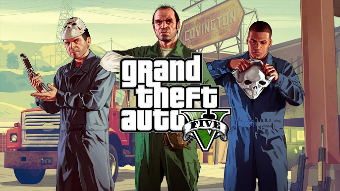

Historia
Grand Theft Auto V presenta una narrativa dinámica que sigue las vidas de tres personajes principales: Michael De Santa, un ex criminal que ahora vive una vida de lujo con su familia; Trevor Philips, un antiguo amigo de Michael con una personalidad impredecible y violenta; y Franklin Clinton, un joven que busca una vida mejor alejándose de su pasado delictivo. A lo largo del juego, estos tres personajes se ven involucrados en una serie de eventos criminales, enfrentando traiciones, persecuciones y el conflicto con sus propios pasados mientras luchan por obtener más poder y dinero en el mundo de Los Santos.
Capítulo 1: El regreso de Michael
La historia comienza con Michael De Santa, quien lleva una vida tranquila y acomodada en Los Santos gracias al dinero que acumuló durante su tiempo como criminal. Sin embargo, su vida perfecta se ve alterada cuando una serie de eventos lo llevan de nuevo al mundo del crimen. Durante una misión, Michael conoce a Franklin Clinton, un joven que busca salir de la vida de delincuencia en la que se encuentra atrapado. A pesar de la distancia entre ellos, los dos se convierten en aliados.
Capítulo 2: La irrupción de Trevor
Mientras Michael intenta llevar una vida normal, su pasado regresa de manera inesperada. Trevor Philips, un viejo amigo y compañero de crímenes de Michael, aparece en escena. Trevor, quien había creído que Michael estaba muerto, descubre que no es así y se enfurece al enterarse de la traición. Este reencuentro pone en marcha una serie de eventos que involucran a los tres personajes, creando tensiones y conflictos tanto internos como externos.
Capítulo 3: La alianza entre Franklin, Michael y Trevor
A medida que avanza la historia, Franklin se ve atrapado entre los conflictos de Michael y Trevor. A pesar de las diferencias entre los tres, las circunstancias los llevan a formar una alianza temporal para llevar a cabo robos y actividades criminales, todo mientras luchan con su lealtad, sus deseos personales y sus aspiraciones. Los tres buscan poder y dinero, pero cada uno tiene su propia visión de lo que significa la "libertad" y el "éxito".
Capítulo 4: El gran golpe
Finalmente, los tres personajes se embarcan en un plan arriesgado y elaborado: un gran golpe que les permitirá obtener una fortuna. La misión, que incluye robos, persecuciones y traiciones, culmina en un enfrentamiento con el gobierno, los enemigos del pasado y las autoridades de Los Santos. Dependiendo de las decisiones del jugador, el final puede variar, con cada uno de los personajes tomando decisiones cruciales que afectan su destino y el de aquellos que los rodean.
Capítulo 5: El desenlace
El final de la historia está marcado por las consecuencias de las elecciones de los jugadores. Pueden elegir entre diversas resoluciones, que incluyen la traición de personajes clave, la resolución de la historia de Michael y Trevor, o la salvación de Franklin de su vida delictiva. La historia termina con el destino de los tres personajes dependiendo de las decisiones que el jugador tome, reflejando la naturaleza dinámica y de libre elección del juego.
